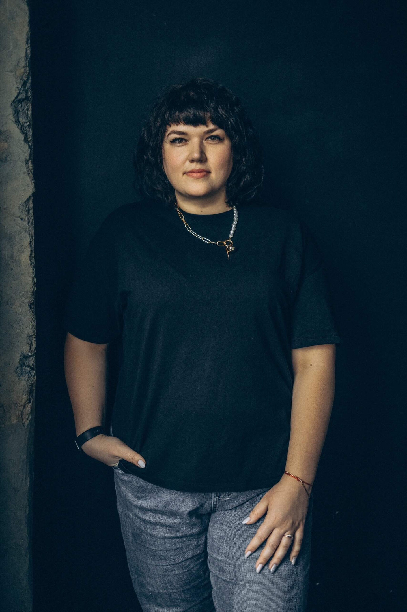
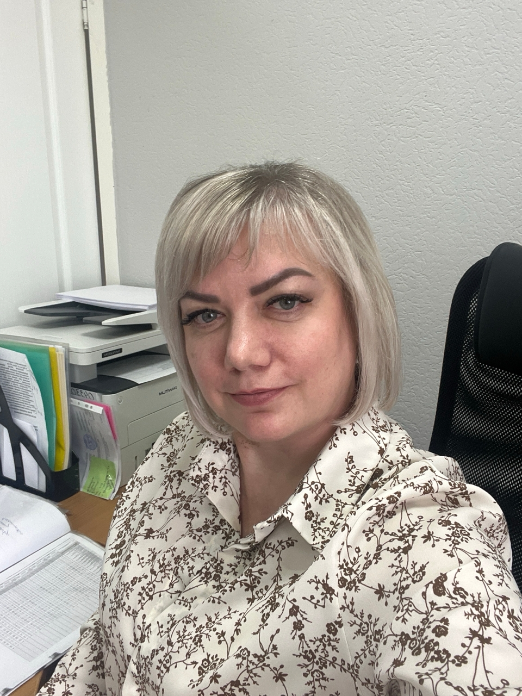
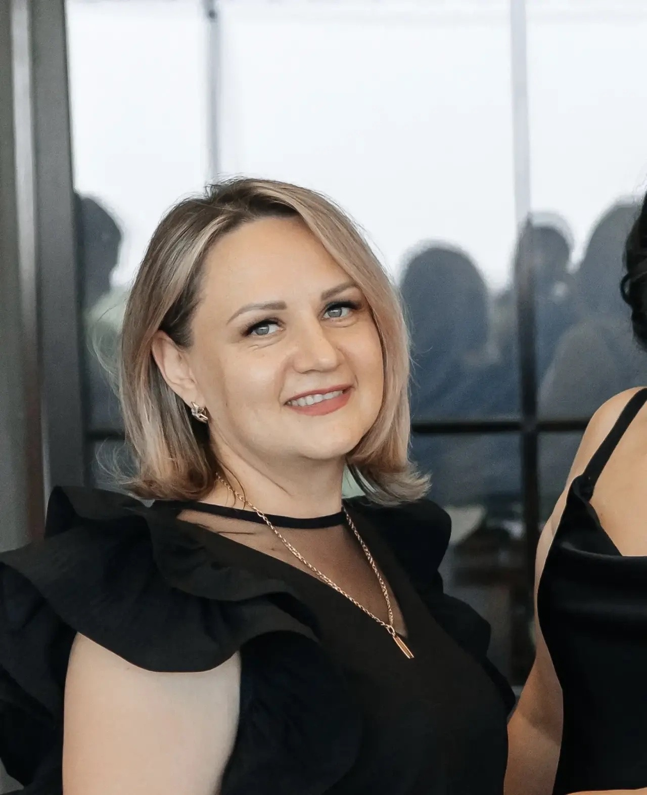

АНО «Точка Открытий» — профессиональная поддержка семей и специалистов в Оренбурге
Создание условий для развития, поддержки и успешной интеграции в общество людей с особыми образовательными потребностями через комплексную помощь семье, повышение квалификации специалистов и организацию объединяющих мероприятий.
Мы делаем мир добрее, открытее и доступнее для каждого.
Нет двух одинаковых детей — нет и шаблонных решений
Мы работаем вместе с родителями, а не вместо них
Все методики основаны на доказательной практике
Понимание и уважение — основа нашей работы

Опыт работы с семьями, в которых воспитываются дети с ОВЗ, — 13 лет. Индивидуальные занятия, консультирование семей.

Работа с семьями, организация мероприятий, сопровождение семей, проведение мастер-классов.
Работа с эмоциональной сферой, адаптация, поддержка родителей, групповая терапия.

Составление бухгалтерской отчётности. Опыт работы более 20 лет.
Ведёт соцсети центра: рассказывает о проектах и мероприятиях, помогает семьям быстрее находить нужную информацию и оставаться на связи с командой.
Согласие на обработку персональных данных имеется.
Комплексное обследование для понимания сильных сторон и зон роста ребёнка
Разработка индивидуальной программы с чёткими целями и сроками
Индивидуальный подход, анализ ситуации и составление рекомендаций
Вопросы обучения и развития особенных детей, проведение семинаров, лекций и практических занятий